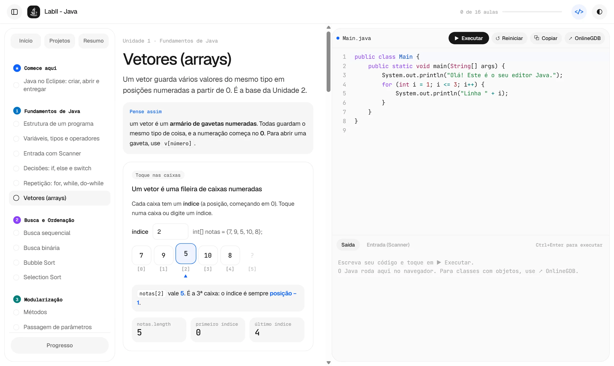
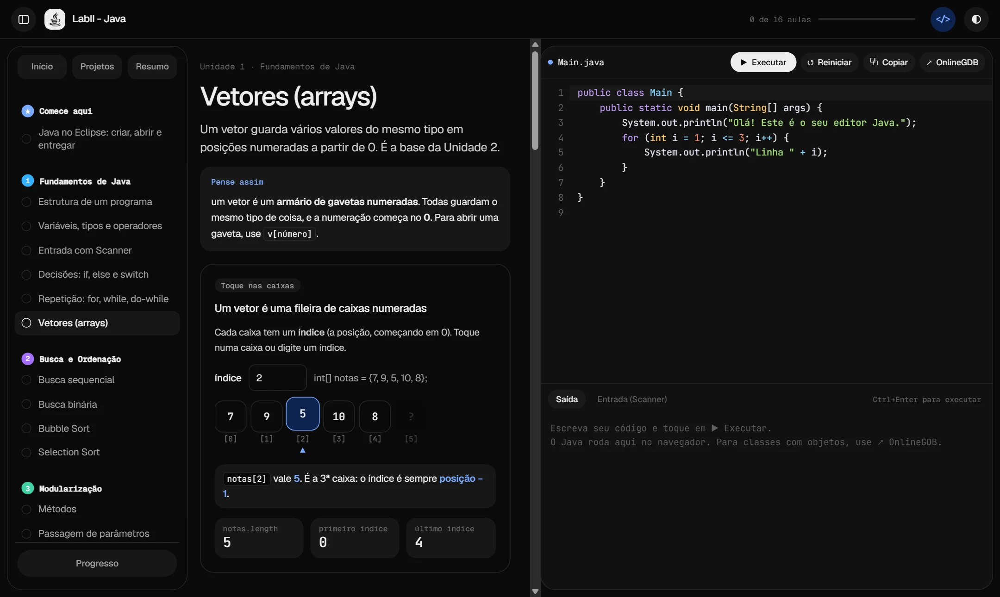
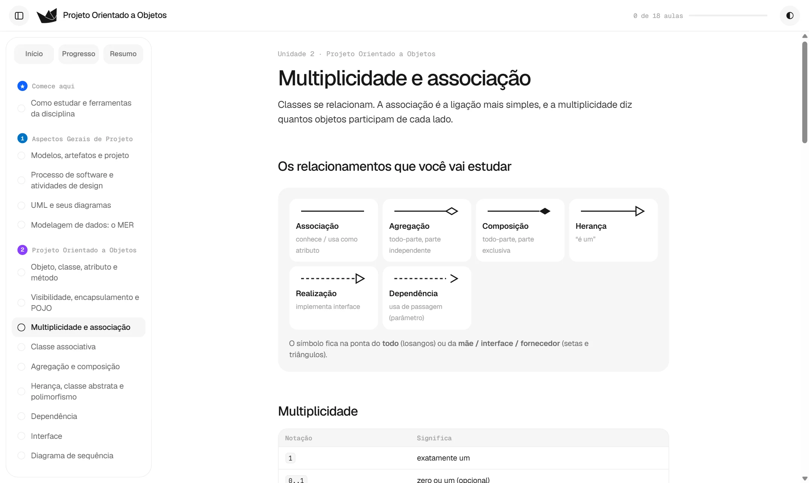
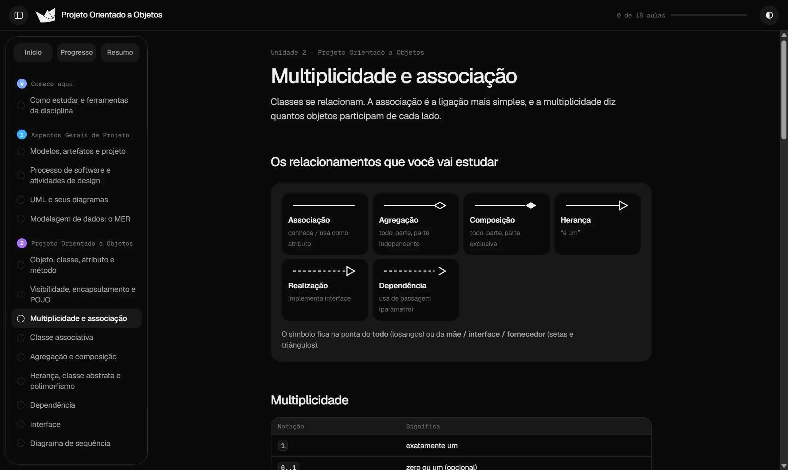

Direto ao ponto
Cada matéria é dividida em aulas curtas, do básico ao desafio, com um resumo para a véspera da prova.
Aulas diretas, exemplos que você pode rodar e exercícios para fixar. Feito para entender de verdade, sem enrolação e sem perder tempo.
Cada matéria é dividida em aulas curtas, do básico ao desafio, com um resumo para a véspera da prova.
Exercícios e testes rápidos em cada aula. No LabII você escreve e executa código Java direto no navegador.
Um painel mostra o que você já domina e onde ainda erra. Tudo fica salvo no seu navegador, sem conta e sem rastreio.




É o site de verdade: clique nas aulas do menu, role a página e teste à vontade.
Leia a teoria, rode o exemplo e confira o resultado. Cada aula traz código e diagramas prontos para você mexer.
public static int soma(int a, int b) { return a b;}int total = soma(7, 5);System.out.println("Total: " + total);Aluno ──────▶ Matrícula ──────▶ Disciplina
nome data nome
email situação créditos
matricular() trancar() vagas()
// associação 1 .. * entre Aluno e MatrículaCada card abre um site independente. Novas disciplinas entram aqui conforme forem ficando prontas.
Laboratório de Programação II: fundamentos de Java, estruturas de controle, vetores, métodos e exceções, com editor para escrever e executar código ali mesmo.
Modelagem e análise de sistemas: diagramas UML, diagramas de sequência, modelagem de dados e testes, explicados passo a passo com exemplos.